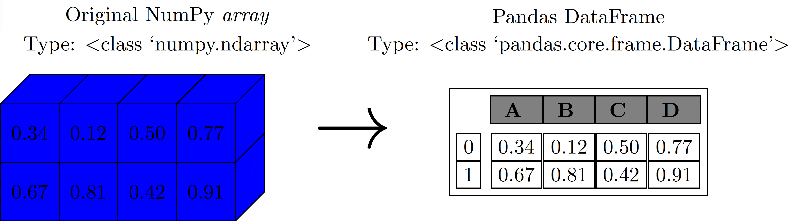
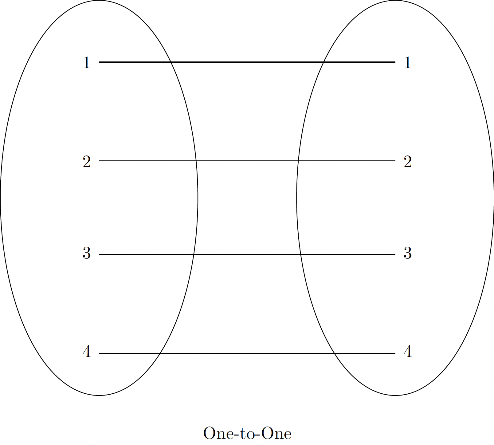
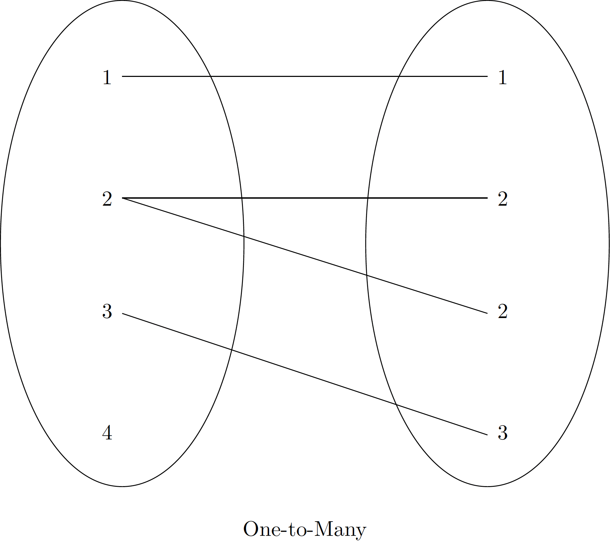

Introduction to Pandas
We are now ready to take a closer look at the data structures provided by the Pandas library. NumPy and its ndarray object serve as a basis for this topic (see the last lecture for more information).
What is Pandas?
Pandas is built on top of NumPy and allows us to work efficiently with DataFrames. We can think of DataFrames as multidimensional arrays with attached row and column labels that often contain heterogeneous types of data (may include missing data). Pandas offers a number of powerful data operations that are also found in spreadsheets and databases.
Although the ndarray object already provides us with several ways to perform numerical computations, it clearly has some limitations when we try to use it for other tasks, such as performing operations that do not map well to element-wise broadcasting (e.g. grouping and pivoting). DataFrames, Series and Index, which are the three main data structures in Pandas and, as mentioned above, are built on top of NumPy arrays, offer efficient ways to manipulate data.
In this lecture, we will explore the main and related data structures of Pandas (e.g. DataFrames, Series and Index, among others).
Pandas Objects
We can think of Pandas objects as upgraded versions of NumPy arrays. The main difference is that in Pandas objects the rows and columns are identified with labels instead of simple integer indices as in NumPy arrays.

Series Object
Series are one-dimensional arrays of indexed data. The general way to create a Pandas Series is pd.Series(data, index=index), where index is an optional argument. The data argument can be various Python objects such as list or np array, scalar, or dictionary. We can create a Series from a list or array as follows:
A Series object has both a sequence of values and a sequence of indices. These can be accessed with the values and index attributes, respectively.
The values attribute returns a NumPy array:
The index attribute returns a Pandas Index object, which is an array-like object that stores the labels for each element in the Series:
We can access individual elements or slices of the Series using array-like indexing with square brackets, similar to NumPy arrays or Python lists:
Series as a Generalized NumPy Array
Series are more general and flexible than standard NumPy arrays because they allow explicitly defined, custom indices. While NumPy arrays have an implicitly defined integer index, a Pandas Series can have an index consisting of values of any desired type (e.g., strings, dates, or even other numbers that are not sequential).
For example, we can create a Series with a string-based index:
Now, we can access values using these custom labels:
Series as a Specialized Dictionary
Series objects share similarities with Python dictionaries, where arbitrary keys map to a set of values. This analogy becomes clearer when creating a Series from a dictionary.
Let’s create a Series using a dictionary where keys represent labels and values represent data:
In this case, the Series index is automatically derived from the dictionary’s keys. We can fetch values using dictionary-style indexing:
However, Series also support array-type operations like slicing, which dictionaries do not:
Tip
When an explicit index is provided from a dictionary, only the keys present in the index will be included in the Series. Missing keys will result in NaN values.
DataFrame Object
DataFrames are also fundamental structures in Pandas.
DataFrame as a Generalized NumPy Array
Just as a Series is an upgraded one-dimensional NumPy array, a DataFrame can be thought of as an upgraded two-dimensional NumPy array. It features flexible row indices and column names, making it much more powerful for tabular data. A DataFrame can also be viewed as a collection of “aligned” Series objects, meaning they all share the same index.
Let’s create an example using two Series objects for payments and claims in different zones:
Now, we combine these two Series into a single DataFrame:
Tip
In a Jupyter Notebook environment, DataFrame objects are typically displayed as user-friendly HTML tables. Like Series, DataFrame objects have index and columns attributes to access row and column labels:
Tip
A DataFrame is essentially a two-dimensional NumPy array where both rows and columns have explicit labels, providing a highly flexible structure for tabular data.
DataFrame as a Specialized Dictionary
A DataFrame can also be thought of as a dictionary where keys are column names and values are Series objects representing the column’s data. For example, to access the ‘claims’ column:
You can also use attribute-style access for column names that are valid Python identifiers and do not conflict with DataFrame methods:
Note
Both dictionary-style and attribute-style access methods are generally equivalent for selecting columns. However, dictionary-style is more robust as it handles non-string column names or names that clash with built-in DataFrame attributes.
Let’s create a DataFrame with some column names that highlight the difference between dictionary-style and attribute-style access:
Now, access columns using both dictionary-style and attribute-style:
You can also use dictionary-style assignment to modify or add new columns to a DataFrame. For instance, let’s add a new column ‘average severity’ which is calculated as ‘payments’ divided by ‘claims’:
We can now look at a DataFrame as an upgraded version of a two-dimensional array. Therefore, we can easily access its raw underlying data using the values attribute:
Based on this point of view, we can therefore perform several array-operations on a DataFrame. For example, we can transpose a DataFrame:
In particular, passing a single index to an array accesses a row (when we treat a DataFrame as a NumPy array):
On the other hand, passing a single index to a DataFrame accesses a column:
For array-style indexing, we need another convention. Pandas uses the loc and iloc indexers, which we discussed earlier. When we use the iloc indexer, we can index the underlying array as if it were a simple NumPy array:
Tip
Note that, when using the implicit Python-style indexing as in the previous example, the DataFrame’s original row and column labels are preserved in the result.
For the loc indexer, we have the following:
Any of the known NumPy-style data access approaches can be used within these indexers. For instance, in the loc indexer we can combine masking and fancy indexing:
Data Loading and Inspection
A fundamental step in any data science workflow is loading data into a Pandas DataFrame and performing an initial inspection to understand its structure, content, and potential issues. Pandas provides robust functions for reading various file formats.
Loading Data from Files
Pandas offers convenient functions to read data from common file formats like CSV, Excel, and more.
Reading CSV Files
The pd.read_csv() function is widely used for loading data from comma-separated values files.
Reading Excel Files
For data stored in Excel spreadsheets, pd.read_excel() is the go-to function.
Tip
When working in a local environment, pd.read_excel() requires the openpyxl engine to be installed. You can install it using pip install openpyxl.
Basic Data Inspection
Once data is loaded, it’s crucial to quickly inspect its contents and summary statistics.
Viewing First/Last Rows (head(), tail())
To get a quick glimpse of the DataFrame, you can use head() to view the top N rows and tail() to view the bottom N rows. By default, both show 5 rows.
Getting DataFrame Information (info())
The info() method provides a concise summary of a DataFrame, including the number of entries, column data types, non-null values, and memory usage. This is invaluable for quickly checking for missing data and correct data types.
Note
The info() output usually goes to standard error, so in some environments (like Jupyter), it might be displayed separately or not captured by print() directly.
Descriptive Statistics (describe())
For numerical columns, the describe() method generates descriptive statistics such as count, mean, standard deviation, min, max, and quartiles.
Check Data Types (dtypes)
The dtypes attribute returns a Series with the data type of each column.
DataFrame Shape (shape)
The shape attribute returns a tuple representing the dimensions of the DataFrame (rows, columns).
Selection and Filtering
Building upon basic indexing, Pandas offers powerful and flexible ways to select and filter data using boolean conditions, which are essential for targeted data analysis.
Boolean Indexing (Masking)
Boolean indexing, also known as masking, uses a boolean Series or array to select data. Only rows (or columns) corresponding to True values in the boolean object are returned.
Conditional Filtering with Multiple Criteria
You can combine multiple boolean conditions using logical operators (& for AND, | for OR, ~ for NOT). Each condition must be enclosed in parentheses.
The isin() Method
The isin() method is useful for filtering rows where a column’s value is among a list of specified values.
Operating on Data in Pandas
Pandas leverages NumPy’s efficient element-wise operations (Universal Functions or ufuncs) for arithmetic, trigonometric, exponential, and logarithmic functions. However, Pandas adds two critical features to these operations:
- Index Preservation: When performing unary operations (e.g., negation,
sin()), the index and column labels are preserved in the output, ensuring data context is maintained. - Index Alignment: For binary operations (e.g., addition, subtraction between two Series or DataFrames), Pandas automatically aligns the indices. This means operations are performed on matching labels, and non-matching labels result in
NaN(Not a Number) values.
Ufuncs: Index Preservation
Any NumPy ufunc can be applied to Pandas Series and DataFrames, and the result will be another Pandas object with its indices preserved.
Applying ufuncs preserves the structure:
Ufuncs: Index Alignment
One of Pandas’ most powerful features is automatic index alignment during binary operations. This ensures that operations are performed on corresponding data, even if the objects have different or unsorted indices.
Let’s demonstrate with two Series that have partially overlapping and different indices:
When we add them, Pandas aligns the indices:
The result contains the union of indices from both Series. For any index where a value is missing in either Series, the result is NaN (Not a Number), indicating missing data. This behavior is crucial for robust data analysis when combining datasets with potentially inconsistent indices.
You can control the fill value for missing entries during alignment using the corresponding object methods (e.g., .add(), .subtract()) instead of operators. For example, to fill NaN values with 0 during subtraction:
Tip
Using series_5 - series_6 is equivalent to series_5.substract(series_6), however, the later allows us to specify the fill value for any missing values.
Similar alignment rules apply to DataFrames, where both row and column indices are aligned.
Performing a subtraction results in alignment across both axes:
Notice that NaN values appear where either DataFrame does not have a corresponding row or column label. The resulting indices are sorted. You can also specify a fill_value here, for instance, filling with the mean of df1:
The following table summarizes Python operators and their equivalent Pandas object methods:
| Python Operator | Pandas method(s) |
|---|---|
+ |
add() |
- |
sub(), subtract() |
* |
mul(), multiply() |
/ |
truediv(), div(), divide() |
// |
floordiv() |
% |
mod() |
** |
pow() |
Operations between a DataFrame and a Series (Broadcasting): Operations between a DataFrame and a Series are similar to NumPy’s broadcasting rules for two-dimensional and one-dimensional arrays.
By default, operations between a DataFrame and a Series are performed row-wise (across columns).
To operate column-wise (down rows), you need to explicitly specify the axis parameter in the method call. For instance, to add the ‘c’ column to each column of the DataFrame:
Remember that index alignment still applies. If the Series’s index does not match the DataFrame’s index along the specified axis, NaN values will result.
Grouping and Aggregation
Groupby is one of the most powerful and frequently used operations in data analysis. It allows you to group data based on one or more keys (columns), apply a function to each group independently, and then combine the results into a new DataFrame. This split-apply-combine strategy is fundamental for summarizing and analyzing data by categories.
The Split-Apply-Combine Strategy
The groupby() operation involves three main steps:
- Split: The data is divided into groups based on some criterion (e.g., unique values in a column).
- Apply: A function (e.g., aggregation, transformation, or filtering) is applied to each group independently.
- Combine: The results from each group are combined into a single, cohesive data structure.
Let’s start with a simple example using a DataFrame of sales data.
Simple Aggregations
The most common use of groupby() is to perform aggregation functions, which compute a single summary statistic for each group. Common aggregation functions include sum(), mean(), count(), min(), max(), and median().
Grouping by a Single Column
Let’s calculate the total Sales for each Region:
Similarly, we can find the average Units sold by each Salesperson:
Grouping by Multiple Columns
You can group by multiple columns by passing a list of column names to groupby().
Applying Multiple Aggregation Functions (agg())
To apply multiple aggregation functions to one or more columns, use the agg() method. You can pass a list of function names (as strings) or a dictionary mapping column names to functions.
Transformation
The transform() method returns an object that has the same index as the original DataFrame, filled with transformed values (e.g., values normalized within their group, or the group mean/sum broadcasted to all original rows). This is useful for feature engineering.
Filtering
The filter() method is used to keep or discard entire groups based on a condition applied to the group data. The condition must return True or False for each group.
This method is particularly useful for actuarial tasks such as identifying high-risk segments (e.g., groups of policies with unusually high claim frequencies) or filtering out data points from underrepresented groups for further analysis. The groupby() operation is incredibly versatile and forms the backbone of many complex data analysis tasks in Pandas.
Applying Functions
Pandas provides powerful methods like apply() and map() that enable you to perform custom operations on your data. These methods are essential for transforming data in ways that built-in functions might not directly support, such as applying complex business logic or reformatting specific columns.
apply() for Series and DataFrames
The apply() method can be used on both Series and DataFrames. It passes each Series (for DataFrame columns or rows) or each element (for a Series) to a custom function.
Applying to a Series
When apply() is used on a Series, it applies the function to each element.
Applying to DataFrame Columns or Rows
When apply() is used on a DataFrame, by default (axis=0), it applies the function to each column (as a Series). If axis=1, it applies the function to each row.
map() for Series
The map() method is specifically for Series and is used to substitute each value in a Series with another value. It is very useful for cleaning and standardizing data. It can take a dictionary or another Series for mapping values.
Mapping with a Dictionary
Mapping with a Function
You can also pass a function (including a lambda function) to map().
Tip
- Use
apply()when you need to apply a function along an axis of a DataFrame (row-wise or column-wise) or to each element of a Series where the logic might be more complex and depend on other values in the row/column. - Use
map()when you have a Series and want to substitute values based on a dictionary, another Series, or a simple function applied element-wise.
Time Series
Time series data is ubiquitous in actuarial science, from tracking claim frequencies and severity over time to analyzing mortality rates, premium trends, and investment performance. Pandas provides powerful and flexible tools for working with time-indexed data, making it straightforward to analyze, manipulate, and visualize temporal patterns.
Converting to Datetime Objects
The first step in working with time series data in Pandas is often to convert date/time strings into proper datetime objects using pd.to_datetime(). This allows Pandas to recognize and leverage the temporal nature of the data.
Setting Datetime as Index
For most time series operations, it’s highly beneficial to set the datetime column as the DataFrame’s index. This enables powerful time-based indexing and resampling capabilities.
Basic Time-Based Indexing and Slicing
With a DatetimeIndex, you can easily select data using dates and time ranges.
Resampling Time Series Data
Resampling is a crucial operation for changing the frequency of time series data (e.g., from daily to weekly, or monthly to quarterly). It involves binning data into new time intervals and then applying an aggregation function.
Tip
Common resampling aliases:
B: Business day frequencyD: Calendar day frequencyW: Weekly frequencyM: Month end frequencyQ: Quarter end frequencyA: Year end frequency
Time series functionality in Pandas is a cornerstone for dynamic actuarial analysis, enabling everything from trend analysis and seasonality detection to forecasting and risk management over different time horizons.
Handling Missing Data
Missing data is a common challenge in real-world datasets, especially in actuarial science where data might be incomplete or erroneous. Pandas provides robust tools to detect, remove, and replace these missing values.
Note
We will use the terms null, NaN (Not a Number), or NA (Not Available) interchangeably to refer to missing data.
Strategies for Representing Missing Data
There are two primary strategies for indicating missing data:
- Using a Mask: An external Boolean array (or mask) explicitly indicates which values are missing.
- Using a Sentinel Value: A specific, reserved value within the data itself (e.g.,
NaNfor floating-point numbers) signifies missingness.
Each approach has trade-offs. Masks require additional storage and computation. Sentinel values, while integrated, can reduce the range of valid data that can be represented (e.g., if 0 or -1 were used as sentinels). Pandas primarily uses sentinel values.
Missing Data in Pandas (NaN and None)
Pandas intelligently handles None and NaN values, converting between them as necessary to maintain consistency and enable efficient operations. When None is introduced into a Series or DataFrame of a numeric type, Pandas will typically upcast the data type to a floating-point type to accommodate NaN.
If you start with an integer Series and introduce None, it will be converted to float64:
The following table summarizes how Pandas handles NA values across different data types:
| Typeclass | Conversion when storing NAs | NA Sentinel Value(s) |
|---|---|---|
floating |
No change | np.nan |
object |
No change | None or np.nan |
integer |
Cast to float64 |
np.nan |
boolean |
Cast to object |
None or np.nan |
Let’s illustrate these conversions:
Note
Strings in Pandas are always stored with an object data type.
Operating on Null Values
Pandas provides several convenient methods for managing null values:
isnull(): Returns a Boolean mask indicatingTruewhere values are missing.notnull(): Returns a Boolean mask indicatingTruewhere values are not missing.dropna(): Returns a newSeriesorDataFramewith null values removed.fillna(): Returns a newSeriesorDataFramewith null values replaced (imputed).
Detecting Null Values
The isnull() and notnull() methods are fundamental for identifying missing data. They both return a Boolean mask of the same shape as the original object.
Using isnull():
Using notnull():
Dropping Null Values
The dropna() method is used to remove rows or columns containing null values. By default, it drops any row that contains at least one null value.
For DataFrames, dropna() offers more control. Let’s create a DataFrame with some null values:
By default, dropna() drops rows with any null values:
To drop columns with null values, set axis=1 (or axis='columns'):
Controlling dropna() Behavior: You can fine-tune dropna() using the how and thresh parameters:
how='any'(default): Drops a row/column if anyNaNis present.how='all': Drops a row/column only if all values areNaN.
Let’s add a fully null column to df_na:
thresh: Requires a minimum number of non-null values for a row/column to be kept.
In the output, rows with indices 0, 1, and 2 are dropped because they have fewer than 4 non-null values (they each have 3).
Filling Null Values
Instead of removing missing data, you can replace (impute) them using the fillna() method. This allows you to substitute NaN values with a specified constant, or values propagated from other parts of the data.
Let’s use a Series with null values:
- Fill with a scalar value (e.g., zero):
- Forward-fill (
method='ffill'): Propagates the last valid observation forward to the next valid observation.
Tip
If the first value(s) are NaN and there’s no previous value to propagate, they will remain NaN.
- Back-fill (
method='bfill'): Propagates the next valid observation backward to the previous valid observation.
For DataFrames, fillna() also allows specifying the axis for filling (e.g., axis=1 for row-wise filling).
Exercise: Consider the following DataFrame:
- Interpolate missing
purchase_amtvalues using linear interpolation. Hint: use Pandasinterpolatemethod.
- Replace missing
sale_amtvalues with the median of thesale_amtcolumn. Hint: use Pandasfillnamethod.
Hierarchical Indexing (MultiIndex)
When working with higher-dimensional data that is indexed by more than one key, hierarchical indexing (also known as MultiIndex) becomes invaluable. It allows you to incorporate multiple index levels within a single Series or DataFrame index, effectively representing data of three or more dimensions in a more compact two-dimensional structure.
This section will cover the creation of MultiIndex objects, performing indexing and slicing on multiply indexed data, and converting between simple and multi-level indexed objects.
To illustrate, let’s consider a scenario from actuarial science where we track claims data for different geographic zones and car models. Suppose we have claims data for three geographic zones (Zone = 1, 2, 3) and nine car models (Make = 1 through 9). We can represent this two-dimensional data within a one-dimensional Series using a MultiIndex.
First, let’s manually create a list of tuples to serve as our multi-index, where each tuple (zone, make) uniquely identifies an observation:
While the above Series has a tuple as its index, it’s not yet a true Pandas MultiIndex. To convert it, we can use pd.MultiIndex.from_tuples():
Now, let’s reindex our Series with this MultiIndex. Pandas will display a hierarchical representation of the data, which is much more readable and intuitive:
Note
In the hierarchical display, blank entries in an outer index level indicate that the value is the same as the non-blank entry directly above it.
MultiIndex Indexing and Slicing: The advantage of a MultiIndex becomes apparent when you need to select data based on multiple levels. You can use direct tuple indexing for specific entries or partial indexing for entire blocks.
For example, to select all claims for ‘Make8’ across all zones:
To select claims for ‘Zone2’ specifically:
And to select claims for ‘Zone1’ from ‘Make3’ to ‘Make8’:
Converting between MultiIndex and DataFrame: The unstack() method allows you to convert a Series with a MultiIndex into a DataFrame with a single index and multi-level columns. This is essentially pivoting the inner index level into columns.
Conversely, the stack() method performs the opposite operation, converting columns (or a subset of columns) into an inner index level, returning a Series (or a DataFrame with fewer columns):
Representing Higher-Dimensional Data: The true power of MultiIndex is in representing data with more than two dimensions. Each additional level in the MultiIndex effectively adds another dimension to your data. For example, if we also have payment data corresponding to each (Zone, Make) pair:
With this structure, we can easily perform operations like calculating the average severity (payments per claim) for each (Zone, Make) combination, and then unstack it for a clear tabular view:
Concatenation
Combining different datasets is a common task in data analysis, ranging from simple concatenation to more complex database-style joins and merges. Pandas provides powerful functions and methods for these manipulations.
We will first explore simple concatenation of Series and DataFrames using pd.concat(), and then delve into more complex join and merge operations.
Recall: Concatenation of NumPy Arrays As a refresher, recall how NumPy’s np.concatenate() works for combining arrays:
The np.concatenate() function takes a list or tuple of arrays as its first argument and an optional axis keyword to specify the dimension along which to concatenate.
Pandas pd.concat() is highly versatile and similar to np.concatenate(), but with additional features designed for handling Pandas objects’ indices. Its full documentation can be found here.
Concatenating Series:
Concatenating DataFrames (Row-wise): By default, pd.concat() concatenates DataFrames row-wise (axis=0).
Concatenating DataFrames (Column-wise): To concatenate column-wise, set axis=1.
Handling Duplicate Indices: Unlike np.concatenate(), pd.concat() preserves indices even if it results in duplicates. This can be either intentional or a potential issue. Pandas provides ways to manage this:
- Catching duplicates as an error: Use
verify_integrity=Trueto raise aValueErrorif duplicate indices are found.
- Ignoring the index: If the original indices are not important, you can generate a new, clean integer index using
ignore_index=True.
- Adding MultiIndex Keys: You can create a hierarchically indexed (MultiIndex) result by providing a
keysargument. This adds an additional level to the index, making each original DataFrame’s index distinct under a new key.
Concatenating DataFrames with Different Column Names: When concatenating DataFrames with non-matching column names, pd.concat() by default performs an ‘outer’ join, meaning it takes the union of all column names and fills missing entries with NaN.
Alternatively, you can specify an ‘inner’ join using `join=‘inner’, which will only include columns that are common to all input DataFrames (the intersection of columns).
Merge and Join
Pandas’ pd.merge() function and the associated .join() method are powerful tools for combining Series or DataFrame objects based on common columns or indices, similar to SQL-style joins. This allows for rich data integration capabilities.
pd.merge() can perform various types of joins, automatically inferring the type based on the input data or allowing explicit specification:



These diagrams illustrate the conceptual difference between one-to-one, one-to-many, and many-to-many relationships in database joins.
One-to-One Joins
A one-to-one join combines two DataFrames where each key value in the ‘left’ DataFrame matches at most one key value in the ‘right’ DataFrame. This is akin to column-wise concatenation but based on a shared key.
Let’s consider two DataFrames containing (fictitious) patient and social insurance number information:
To combine these, we use pd.merge(). Pandas automatically detects the common column, ‘Patient_ID’, and uses it as the merge key:
Key points about pd.merge():
- It automatically identifies common column names to use as merge keys. You can explicitly specify the key(s) using the
on,left_on, orright_onarguments. - The order of rows in the result is not necessarily preserved from the original DataFrames.
- By default,
pd.merge()discards the original indices of the input DataFrames and creates a new default integer index for the merged result.
Many-to-One Joins
In a many-to-one join, one of the key columns contains duplicate entries, while the other is unique. The resulting DataFrame will duplicate entries from the ‘one’ side to match all corresponding entries on the ‘many’ side.
Let’s merge the df_patients DataFrame with a DataFrame containing doctor information, where multiple patients can be associated with one doctor:
Now, merge these two DataFrames on ‘Doctor_ID’:
Notice how ‘Dr. Elizabeth’ (Doctor_ID 109) appears twice, as two patients are associated with her. Similarly for ‘Dr. John’ (Doctor_ID 104) and ‘Dr. X’ (Doctor_ID 110).
Many-to-Many Joins
If the key column in both the left and right array contains duplicates, then the result is a many-to-many join. The result will be a DataFrame where all possible pairings of matching keys are included, potentially leading to a much larger DataFrame.
Let’s merge the df_patients DataFrame with a DataFrame representing paychecks, where a doctor might have multiple paychecks and each paycheck is associated with a doctor ID (which itself might be duplicated for patients):
Merging df_patients and df_paychecks on ‘Doctor_ID’ will create a many-to-many relationship:
From this merged DataFrame, we can aggregate data, such as the total salary recorded for each doctor:
Optional: Pivot Tables
Pivot tables are a powerful feature in Pandas, similar to those found in spreadsheet software, that allow you to reshape and summarize DataFrames. They are invaluable for exploring relationships between multiple variables and for creating aggregated views of your data. The pivot_table() function is highly flexible, supporting various aggregation functions and multiple levels of indexing for both rows and columns.
Introduction to pivot_table()
The pd.pivot_table() function takes several key arguments:
data: The DataFrame to be pivoted.values: The column(s) to aggregate.index: The column(s) to use as row index(es).columns: The column(s) to use as column index(es).aggfunc: The aggregation function(s) to apply (e.g.,'mean','sum',np.sum).fill_value: Value to replace missing values in the pivot table.
Let’s use an example with insurance policy data:
Basic Pivot Table
Let’s calculate the average Premium by Region and Product:
Notice how NaN values appear where there are no corresponding (Region, Product) combinations. We can fill these with a fill_value.
Multiple Aggregation Functions
You can specify multiple aggregation functions by passing a list to aggfunc.
Multiple Indexing for Rows and Columns
You can create more complex pivot tables by using multiple columns for index and columns.
Pivot tables are incredibly versatile for summarizing large datasets and are a cornerstone of exploratory data analysis in actuarial science, allowing for quick insights into aggregated policy performance, claim distributions, and product profitability across different segments.